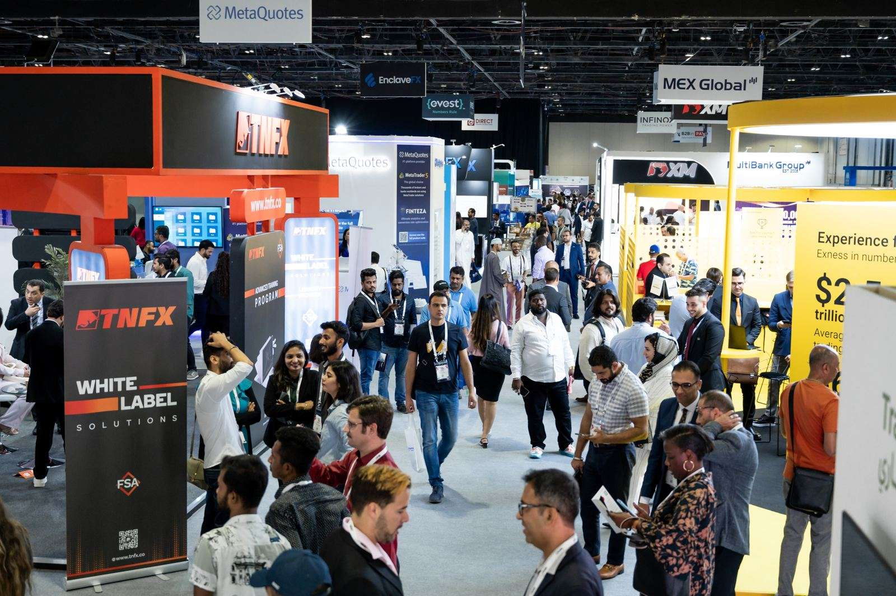

Conferences · Crypto / Web3
The Forex Expo 2027
- Dates
- –
- Venue
- Dubai World Trade Centre
- Location
- Dubai, United Arab Emirates
- Format
- In-person
- Category
- Crypto / Web3
- Industry
- Business and Finance
- Organiser
- Huan Qiao Event Management
- Official website
- https://theforexexpo.com/
About
Trade audience: Trade and Public. UAE dates are local (Gulf Standard Time, UTC+4).
Topics: crypto, digital assets.
Sources
- Official — https://www.dwtc.com/en/events/the-forex-expo-2027/
- Official website — https://theforexexpo.com/
Hotels
- Fairmont Dubai — 5★ · Sheikh Zayed Road, Dubai, United Arab Emirates · 0.5 km from the venue · Price on request
Venue
- Dubai World Trade Centre — Exhibition grounds · Sheikh Zayed Road, Convention Gate, Dubai